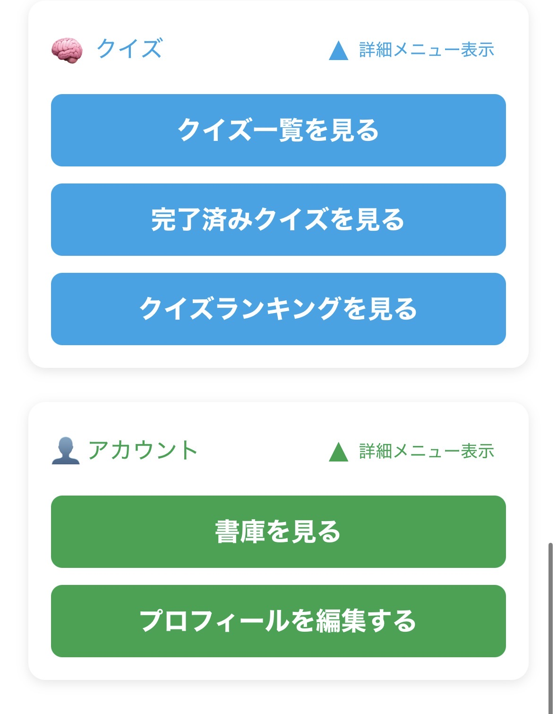

ホームから「クイズ一覧を見る」を選びます。
01 / START
クイズは4ステップで参加できます
ホーム画面の「クイズ」メニューから、気になる問題を選んで回答。終了後に正解と山分け結果を確認できます。
タイトルと山分けポイントを確認します。
回答欄に文字を入力して送信します。
終了後に正解・解説・獲得ポイントを確認します。
02 / FIND
「クイズ一覧を見る」から挑戦
クイズメニューには、開催中、完了済み、ランキングへの入口がまとまっています。

参加中と過去のクイズを使い分け
- ホームの「クイズ」を開く
- 「クイズ一覧を見る」を選択
- 気になるクイズのカードを開く
- 問題と山分けポイントを確認
「完了済みクイズ」も便利です。
終了した問題の正解や解説を振り返りたいときは、完了済みクイズから確認できます。
終了した問題の正解や解説を振り返りたいときは、完了済みクイズから確認できます。
03 / ANSWER
答えを入力して送信
クイズ詳細で問題を読み、回答欄に答えを入力します。回答は送信後も追加できます。
ゆめつきクイズ
問題文をよく読んで、答えを入力してください。
山分けポイント：1,000 pt
新しい回答
表記まで丁寧に考えてみよう
- 問題文を最後まで読む
- 回答欄に答えを文字で入力
- 「回答する」を押して送信
- 自分の過去の回答を確認
回答は複数回送れます。
思いついた別の答えを追加することもできます。正解判定は登録された正解との一致で行われるため、文字や表記にも注意しましょう。
思いついた別の答えを追加することもできます。正解判定は登録された正解との一致で行われるため、文字や表記にも注意しましょう。
04 / POINTS
正解者でポイントを山分け
クイズに設定された山分けポイントを、正解したユーザーで均等に分けます。
🎯
正解者が対象
複数の回答を送っていても、その中に正解があれば正解者として集計されます。
🤝
1人1枠で山分け
同じ人が複数回正解しても重複加算せず、正解ユーザー単位で山分けします。
例：山分けポイントが1,000pt、正解者が4人なら、1人あたり250ptです。端数が出る場合は小数点以下が切り捨てられます。
05 / ARCHIVE
終了後は答え合わせを楽しむ
完了済みクイズでは、正解、解説、山分けポイント、参加者の回答を振り返れます。
クイズ結果を発表！
正解：〇〇〇
解説：配信で登場したエピソードがヒントでした。
山分け結果：250 pt
答えだけでなく、回答の盛り上がりも
自分の回答を振り返るほか、どんな回答が集まったのかも確認できます。次のクイズのヒント探しにもおすすめです。
- 「完了済みクイズを見る」を選ぶ
- 振り返りたいクイズを開く
- 正解・解説・山分け結果を確認
- 参加者の回答もチェック
06 / RANKING
回答数ランキングで人気問題を発見
クイズランキングでは、完了済みクイズを回答数の多い順に確認できます。
🏆
盛り上がったクイズが分かる
回答が多く集まったクイズから順番に表示。人気だった問題をすぐに見つけられます。
💡
正解と解説をまとめて確認
ランキングから詳細を開き、正解・解説・山分け内容を振り返れます。
これはユーザー順位ではありません。
現在のクイズランキングは、完了した「クイズ自体」を回答数順に並べる機能です。
現在のクイズランキングは、完了した「クイズ自体」を回答数順に並べる機能です。
07 / FAQ
よくある質問
クイズへの参加にポイントは必要ですか？
現在の仕組みでは、回答時にポイントを消費する処理はありません。開催中のクイズを開いて回答できます。
回答は一度しか送れませんか？
複数の回答を追加できます。送信した内容は「あなたの過去の回答」で確認できます。
正解者が複数いる場合はどうなりますか？
設定されたポイントを正解ユーザー数で割り、均等に付与します。小数点以下は切り捨てです。
複数回正解するとポイントも増えますか？
いいえ。1つのクイズにつき、正解したユーザー1人を1枠として山分けします。
終了したクイズはどこで見られますか？
ホームのクイズメニューにある「完了済みクイズを見る」から確認できます。
今日のひらめきを試してみよう。
開催中のクイズを開いて、ポイント獲得にチャレンジ。